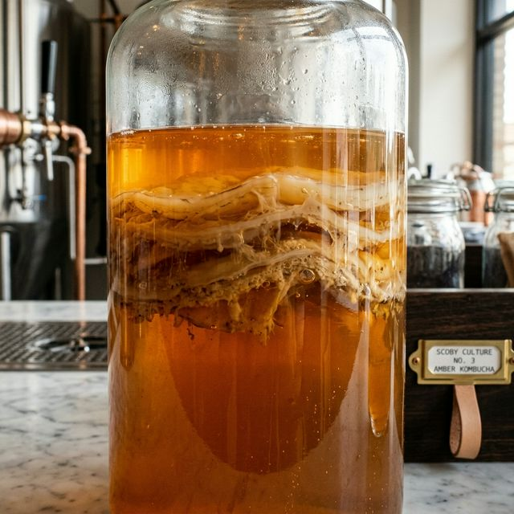

Legacy Strains
The Master Cultures
Every bottle begins with our proprietary SCOBY strains, some of which have been nurtured for over a decade.
Strain Alpha-7
Known for its sharp, crisp acidity and high probiotic density. Used exclusively for our Pacific Rain and Mountain Peak collections.

Global Terroir
Beyond the Local
While we brew in small batches locally, our spirit is global. We partner directly with organic estates in Japan, India, and Egypt to bring you the purest teas and botanicals on Earth.
Lifestyle
The Art of Pairing
Sparkling Rosé
Pairs beautifully with artisanal goat cheese and sun-dried tomatoes. The floral notes cut through the richness of the cheese.
Bitter Roots
The perfect companion for dark chocolate and sea salt. The earthy ginger overtones create a complex, lingering finish.
Ocean Mist
Ideal for spicy Asian cuisine. The light, effervescent citrus body cools the palate while enhancing delicate spices.
The 30-Day Living Journey
The Art of the Slow Brew
Time is our most important ingredient. Every batch follows a meticulous timeline to ensure optimal flavor and probiotic peak.
Organic teas are steeped at precise temperatures to extract the perfect balance of polyphenols without bitterness.
The SCOBY culture begins its transformative work, consuming organic cane sugar and creating a complex ecosystem of acids and probiotics.
Fresh-pressed fruits and cold-infused botanicals are added to create our unique signature flavor profiles.
The kombucha is bottled and naturally carbonated in the glass, and chilled to pause the fermentation at its absolute peak.
Plastic Free
Solar Powered
CO2 Offset
Waste Goal
Sustainability
Brewing with a Negative Footprint
Our commitment to the planet is as strong as our commitment to flavor. Every bottle of Kombucha. is an investment in a circular economy and a cleaner future.
Download Full 2026 Report